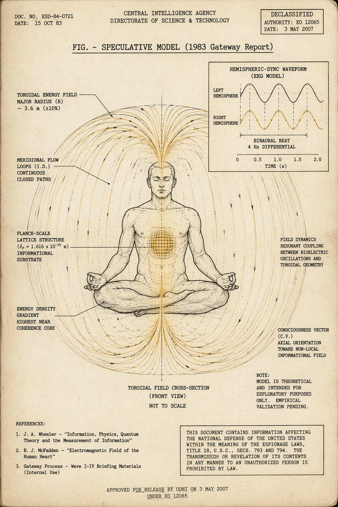
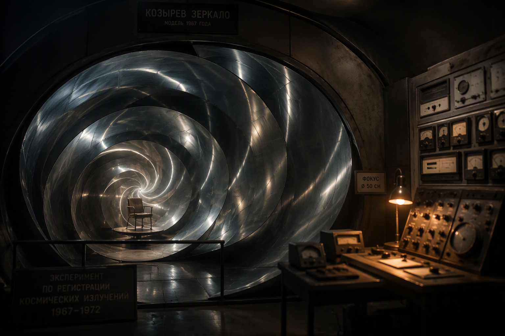

The Psi Programs
Project Stargate (1972–1995) Program documented Phenomenon unproven
The remote-viewing program ran twenty-three years under successive codenames — SCANATE (1972), GONDOLA WISH, GRILL FLAME (1978), CENTER LANE (1983/84), SUN STREAK (1985), STARGATE (1991–95) — migrating from CIA to DIA to Army INSCOM, costing roughly $20M. Its origins were threat-driven: SRI physicists Harold Puthoff and Russell Targ began in 1972, prompted by the DIA’s report Controlled Offensive Behavior — USSR, which estimated Soviet psi funding at $13–21M per year.1 Subjects included Ingo Swann (who designed Coordinate Remote Viewing), Pat Price, and Uri Geller — whose 1974 Nature paper on “information transmission under conditions of sensory shielding” was methodologically dismantled by Marks and Kammann. Operationally, Fort Meade’s DT-S unit and Joseph McMoneagle (Viewer #001) ran some 450+ missions.
The 1995 American Institutes for Research evaluation split famously: statistician Jessica Utts found effects 5–15% above chance statistically significant; Ray Hyman found methodological flaws and no independent replication. The bottom line was not statistical but operational: remote viewing never produced actionable intelligence, and the program was terminated June 30, 1995.2 Twelve million pages of the CREST database went online in January 2017 — including the genuinely strange Mars-1,000,000-BC session transcript, which this archive files as a document, not a datum.3
The Gateway Report (1983) Document real Model speculative
On June 9, 1983, Lt. Col. Wayne M. McDonnell of Army INSCOM filed the Analysis and Assessment of Gateway Process (CIA-RDP96-00788R001700210016-5) — an evaluation of the Monroe Institute’s Gateway Experience and its Hemi-Sync technology.4 The famous “missing page 25” was a scanning omission; it discusses “the Absolute.”
The report’s content, accurately stated: it compares Gateway to hypnosis, transcendental meditation, and biofeedback; Hemi-Sync is binaural beats (e.g., a 4 Hz differential) said to synchronize hemispheric EEG, with “Focus levels” 10/12/15/21. Its physics model is heavily Itzhak Bentov: the body as an oscillating system; a heart/aorta ~7 Hz standing wave entraining body fluids; resonance with Earth’s ~7.5 Hz field as the coupling mechanism; then Pribram’s holographic brain married to Bohm’s implicate order; consciousness as energy in coherence; the Planck length (10⁻³³ cm) where time-space breaks down; universal energy flow as a torus returning into the Absolute.

The decisive fact about the document: it was a desk assessment, not an experiment — judged “plausible,” demonstrating nothing. “CIA proved astral projection” is a Misreading. What modern evidence supports is modest: binaural-beat entrainment shows real but small EEG effects (2023 meta-analyses), and out-of-body experiences are real subjective events with temporoparietal correlates. Verified exterior perception during OBEs has never been demonstrated.
MKULTRA — the institutional context Documented
MKULTRA (CIA, 1953–1973, Sidney Gottlieb) ran ~149 subprojects at 80+ institutions: LSD, hypnosis, sensory deprivation, interrogation research; Subproject 136 touched ESP in 1961. The records were destroyed in 1973; ~20,000 pages survived; the Church Committee and the August 3, 1977 Senate hearing exposed the program; Frank Olson died in 1953.5 It matters here as the institutional pattern that preceded the psi programs — and as a calibration: the most aggressive mind-control program in American history produced real crimes and no reliable mind control. Keep that base rate in mind for everything below.
The UAP File
AAWSAP / AATIP and the 38 DIRDs Program documented DIRDs speculative
In September 2008 the DIA awarded contract HHM402-08-C-0072 to BAASS — $22M, championed by Senators Reid, Stevens, and Inouye; DIA program manager James Lacatski. AAWSAP was the contract; AATIP the narrower Pentagon continuation associated with Luis Elizondo. The deliverables were 38 Defense Intelligence Reference Documents — technology forecasts to ~2050: warp drive, dark energy and extra dimensions (Obousy/Davis); traversable wormholes, stargates, negative energy (Davis); advanced propulsion via vacuum metric engineering (Puthoff); invisibility cloaking (Leonhardt); metamaterials; metallic glasses; programmable matter; antigravity (DIRD 19); negative-mass propulsion (Winterberg); high-frequency gravitational-wave communications; anomalous field effects on human tissue (Kit Green); quantum tomography of negative energy states; aneutronic fusion; advanced nuclear propulsion.6
Thirty-seven of the 38 were released via FOIA in March 2022; the 38th (high-energy laser weapons, Albertine) remains classified. AARO’s verdict on the set: speculative literature surveys, not demonstrated technology. On Skinwalker Ranch, where BAASS did field work absorbing the earlier NIDS effort: AARO’s 2024 Historical Record Report (Vol. I) found the contractor did paranormal research the DIA did not authorize, with no verified anomalous findings; the program was cancelled in 2012 for lack of merit, and the proposed successor Kona Blue was rejected.
The public timeline, 2017–2024
- Dec 2017 — NYT reveals AATIP; FLIR1/GIMBAL/GOFAST videos circulate.
- Jun 25, 2021 — ODNI assessment: 144 incidents, 143 unexplained, 18 with unusual flight characteristics.
- May 17, 2022 — House hearing; Jul 2022 — AARO established.
- Jul 26, 2023 — David Grusch testimony: crash-retrieval claims, secondhand.
- Mar 8, 2024 — AARO Historical Record Report Vol. I: no evidence of extraterrestrial technology, crash retrievals, or hidden programs; circular reporting and misidentified conventional programs.
- Nov 13, 2024 — further hearing (Elizondo; Shellenberger on “Immaculate Constellation”).
The archive’s standing verdict: Open as airspace safety; Closed, negative, as extraterrestrial technology per the official record. Testimony alone does not move this grade; sensor-verified data or official releases do.
Machines & Mirrors
HAARP Heater real Weapon claims impossible
The High-frequency Active Auroral Research Program at Gakona, Alaska — built 1993–2007 by AFRL, the Navy/ONR, DARPA, and the University of Alaska; transferred to UAF in August 2015 — is a real ionospheric heater: 180 crossed-dipole HF antennas on 33 acres, 3.6 MW at 2.8–10 MHz, ERP ~2–5 GW, heating small ionospheric volumes for seconds to minutes.7 The conspiracy claims fail on physics, not secrecy: HF is absorbed in the ionosphere and never reaches the troposphere or stratosphere; 3.6 MW is geophysically trivial; the Turkey-earthquake claims were fact-checked false (PolitiFact, Full Fact). HAARP cannot steer weather and cannot reach minds.
Psychotronics & the Pavlita generators Threat estimates real Devices unreplicated
The declassified DIA assessments are genuine documents of Cold War anxiety. Soviet and Czechoslovakian Parapsychology Research (DST-1810S-387-75, 1975) covers Robert Pavlita’s “psychotronic generators” — shaped metal devices allegedly charged by human “biological energy,” said to kill flies in a gap and move small objects; KGB interest is documented. The report warns that “perfection of psychotronic weapons would pose a severe threat… the only power source required would be the human operator.” Paraphysics R&D — Warsaw Pact (March 30, 1978, 137 pp.) surveys Vasiliev’s telepathy work and the Kulagina PK films; the word “psychotronics” itself was coined in the Czech milieu (Rejdák; Prague congress 1973).8
These were threat estimates, not demonstrated capability: Pavlita’s devices never replicated under blind conditions. The modern analog is real and bounded — DARPA N3 (2018/19–~2023, ~$104M) produced non-surgical bidirectional brain-computer interfaces (Battelle’s BrainSTORMS, Rice’s magnetic-optical-acoustic MOANA), completing with real, limited BCIs and no “mind control.”
Kozyrev mirrors Time energy untestable

Kozyrev was a real astrophysicist — he observed the Moon’s transient phenomena professionally — whose causal-mechanics experiments never replicated. The mirror chambers of the 1990s wrapped that inheritance in a ritual object: sit at the focus of a one-and-a-half-turn aluminum spiral, and the “time energy” concentrates. What concentrates, in fact, is Ganzfeld-style sensory deprivation plus shielding plus expectancy — a family of effects Feynman explored in isolation tanks and found subjective but unremarkable. The experiments committed and failed replication (that component: Refuted); “time energy” as such has no instrument, unit, or prediction (that component: Untestable).
The Closed Drawer
What remains classified or unreleased
- The 38th DIRD (High Energy Laser Weapons, Albertine) — SECRET.
- Full BAASS/Skinwalker field data — collected, unreleased in full.
- Stargate redactions — names and operational details remain excised.
- The Tesla trunk discrepancy (80 alleged vs. 60 received) — unresolved paperwork, not withheld physics.
- The MKULTRA archive — destroyed 1973; absence of evidence here is engineered, and the archive says so.
The discipline for reading this list: classification withholds documents, not physics. A classified laser survey stays classified because it is a weapons program, not because lasers are metaphysics. The gaps above are catalogued so that absence is not mistaken for confirmation.
The two-column matrix
| Program | Documented real? | Phenomenon validated? |
|---|---|---|
| Stargate (1972–95) | Yes — CREST, ~$20M, 450+ missions | No operational utility; lab statistics disputed (Utts vs. Hyman) |
| Gateway report (1983) | Yes — one document, CIA-RDP96-00788R001700210016-5 | Nothing demonstrated — a theory survey |
| MKULTRA (1953–73) | Yes — Church Committee; 1977 hearing | Real crimes; no reliable mind control |
| AAWSAP/AATIP (2007–12) | Yes — contract HHM402-08-C-0072, $22M | DIRDs are speculation; AARO: no ET technology |
| HAARP (1993–2007) | Yes — haarp.gi.alaska.edu | Heating real; weapon/mind-control claims physically impossible |
| Tesla seizure (1943) | Yes — Office of Alien Property, Trump report | Trump: nothing workable; papers to Belgrade 1952 |
| Psychotronics / N3 | Yes — DIA estimates; DARPA program | Soviet psi unverified; N3 produced real, limited BCIs |
- CIA Reading Room, STARGATE collection: cia.gov/readingroom/collection/stargate; DIA, Controlled Offensive Behavior — USSR (1972), CIA-RDP96-00788R001300010001-7. ↩
- AIR evaluation (Mumford, Rose & Goslin; Utts/Hyman commentaries), CIA-RDP96-00791R000200180005-5: cia.gov/readingroom. ↩
- Mars session transcript, CIA-RDP96-00788R001900760001-9; CREST release, January 2017: cia.gov/readingroom. ↩
- McDonnell, Analysis and Assessment of Gateway Process (June 9, 1983), CIA-RDP96-00788R001700210016-5: cia.gov/readingroom. ↩
- Church Committee reports (1975–76); Joint Hearing of August 3, 1977 (Senate Select Committee on Intelligence). Surviving records via CIA FOIA reading room. ↩
- DIA FOIA release of 37 DIRDs (March 2022); AARO, Report on the Historical Record of U.S. Government Involvement with UAP, Vol. I (March 2024): aaro.mil. ↩
- HAARP facility: haarp.gi.alaska.edu; fact-checks: PolitiFact and Full Fact on Turkey-quake claims (2023). ↩
- DIA, Soviet and Czechoslovakian Parapsychology Research (DST-1810S-387-75, 1975); Paraphysics R&D — Warsaw Pact (1978): CIA Reading Room, cia.gov/readingroom. ↩